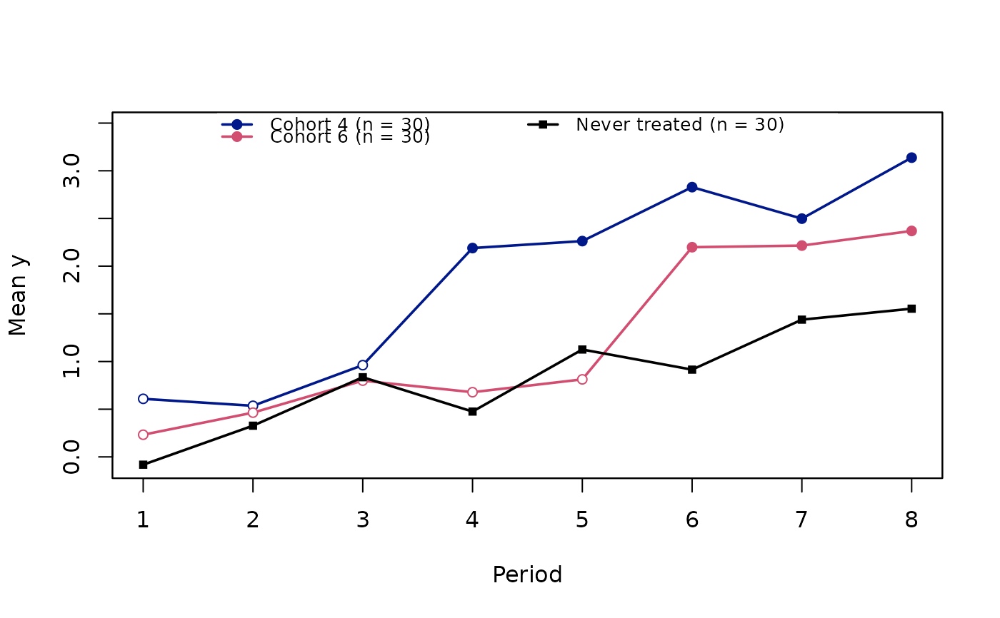
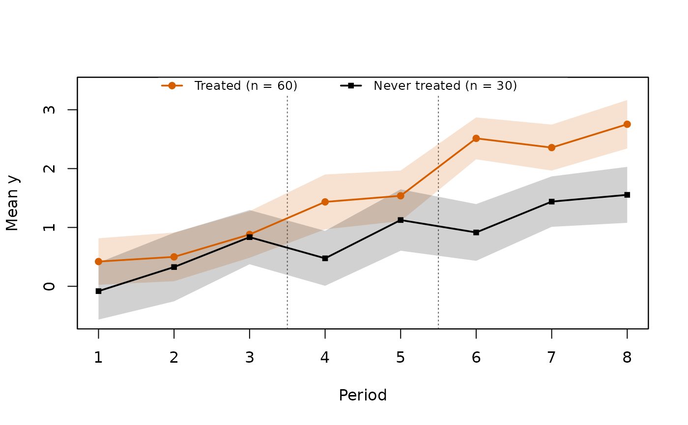
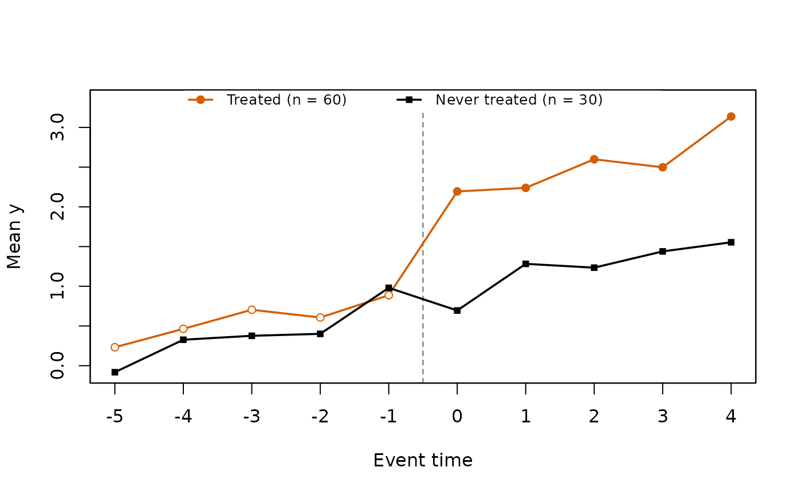

Draws the mean outcome over time, the classical first look at a difference-in-differences design before any model is fitted.
Usage
trendplot(
data,
index,
treat,
outcome,
type = c("cohort", "treated", "event"),
weights = NULL,
band = FALSE,
level = 0.95,
min_e = -Inf,
max_e = Inf,
col = NULL,
legend = TRUE,
xlab = NULL,
ylab = NULL,
main = NULL,
ylim = NULL,
...
)Arguments
- data
a data frame in long format
- index
c(individual, time): column names, the time numeric- treat
name of the column with the first treated period, as in
attgt()andtreatmentplot()(0,NAorInffor never-treated units)- outcome
name of the outcome column (numeric or logical)
- type
"cohort","treated"or"event"(see Details)- weights
optional sampling weights: the name of a column of
dataor a non-negative numeric vector with one value per row- band
logical: add pointwise confidence bands (shaded) around each line
- level
confidence level of the bands
- min_e, max_e
event window for
type = "event"- col
line colours, one per line (cohorts first, the never treated last). The default gives ordered colours to the cohorts and black to the never treated.
- legend
logical: add a legend
- xlab, ylab, main
axis labels and title
- ylim
y-axis limits
- ...
passed to
graphics::plot()
Value
a data frame of the plotted means, invisibly: group (the line
label), time (calendar period, or event time for type = "event"),
mean, se and n (number of observations)
Details
type = "cohort": one line per adoption cohort and one for the never-treated units, against calendar time. Points are hollow before the cohort adopts and filled from adoption on.type = "treated": the ever-treated and never-treated means against calendar time. A dashed vertical line marks a single adoption date (half a period before it); with staggered adoption each adoption date gets a dotted line (the ever-treated mean then mixes treated and not yet treated observations).type = "event": the treated units aligned on event time (period minus first treated period), with a dashed line at treatment onset (-0.5). Never-treated units have no event time, so their mean cannot be aligned directly; the never-treated line is instead their mean in the same calendar periods as the treated observations: at event timee, each treated observation contributes the never-treated mean of its own period (a calendar-matched comparison, as in stacked event studies). The treated mean at each event time pools cohorts observed in different calendar periods, so its composition changes withe.
Means are weighted by weights when given. The standard error of each
mean is cluster-robust by individual,
$$\widehat{se}(\bar y_c) = \sqrt{\frac{G_c}{G_c - 1} \sum_{g}
\Big(\sum_{i \in g} w_i (y_i - \bar y_c)\Big)^2 \Big/ W_c^2},$$
with G_c the number of individuals contributing to the mean and W_c
the sum of their weights: the usual standard error of a mean (with one
observation per individual it is s / sqrt(n)), and the one of
fixest::feols(y ~ 1, cluster = ~id) fitted on the observations of the
mean. The calendar-matched never-treated line of type = "event" is a
fixed linear combination of period means; its standard error uses the
same formula with the influence of each never-treated observation.
See also
treatmentplot() for the treatment timing, panelplot() for the
unit by period values, attgt() and
etwfe() for the estimators.
Other policy evaluation:
attgt(),
did(),
etwfe(),
eventplot(),
eventstudy(),
panelplot(),
treatmentplot()
Examples
set.seed(2)
d <- expand.grid(id = 1:90, t = 1:8)
d$first <- rep(c(4, 6, 0), each = 30)[d$id]
d$y <- rnorm(90)[d$id] + 0.2 * d$t +
ifelse(d$first > 0 & d$t >= d$first, 1, 0) + rnorm(nrow(d))
trendplot(d, index = c("id", "t"), treat = "first", outcome = "y")

trendplot(d, c("id", "t"), "first", "y", type = "treated", band = TRUE)

m <- trendplot(d, c("id", "t"), "first", "y", type = "event")

head(m)
#> group time mean se n
#> 1 Treated -5 0.2322927 0.3041021 30
#> 2 Treated -4 0.4638733 0.2999028 30
#> 3 Treated -3 0.7041348 0.1874108 60
#> 4 Treated -2 0.6071081 0.2158302 60
#> 5 Treated -1 0.8873404 0.2011706 60
#> 6 Treated 0 2.1941933 0.1964449 60